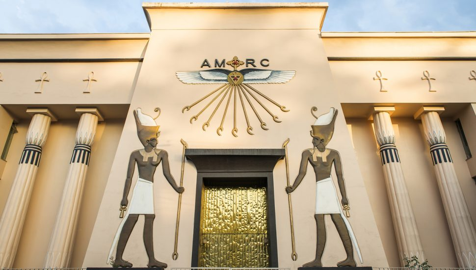
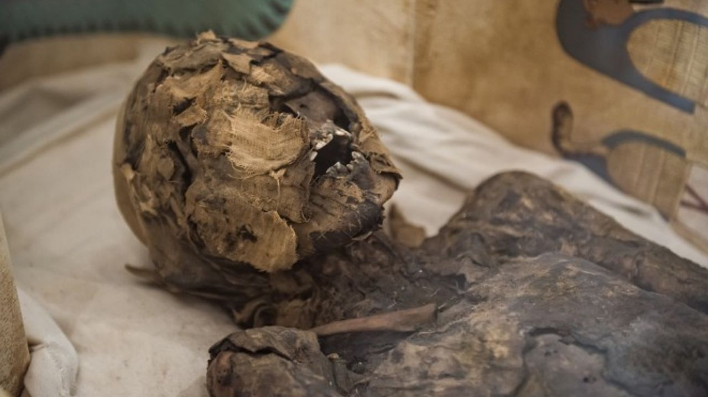
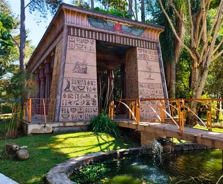

O QUE É O MUSEU EGÍPCIO ROSACRUZ
O museu Egípcio e Rosacruz fica em Curitiba, no Bacacheri, é um dos espaços mais fascinantes do Brasil, pois abriga uma vasta coleção de réplicas fiéis, relíquias e a principal atração, a múmia Tothmea!

O Egito no Coração do Paraná: A Jornada do Museu Rosacruz
O Museu Egípcio e Rosacruz começou a se desenvolver no Paraná a partir de 1956, quando a Ordem Rosacruz transferiu sua sede nacional para o bairro Bacacheri, em Curitiba. A fundação oficial do museu ocorreu em 17 de outubro de 1990, inicialmente em um prédio com formato de tumba egípcia que abrigava réplicas vindas dos Estados Unidos. O grande salto da instituição aconteceu em 1995 com a chegada de Tothmea, uma múmia real de 2.700 anos que transformou o local em um centro de pesquisas científicas. O crescimento constante do público motivou uma grande expansão em 2019, marcada pela abertura do Museu Tutankhamon e pela criação do Complexo Luxor, consolidando o espaço como um circuito cultural ao ar livre e um dos principais polos de egiptologia da América Latina.

importância cultural
importância o museu para a cultura paranaense

Curiosidades
curioiae sobre o museu
Curiosidade 2
outra curiosiade